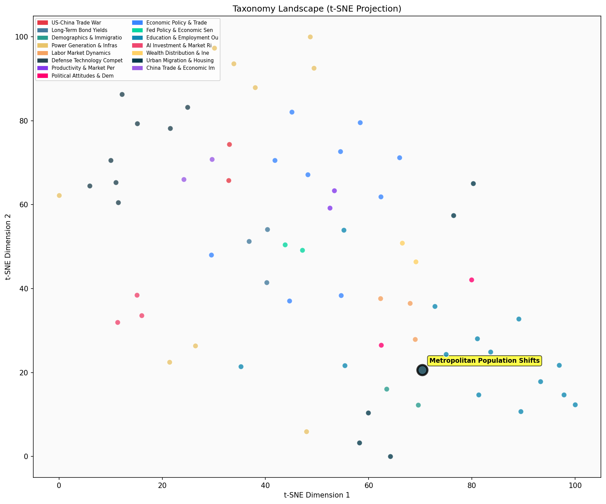

Description
This subcluster examines the economic forces driving population movements within and between major US metropolitan areas. Articles analyze domestic migration patterns, particularly outflows from high-cost cities like NYC and California, using census data and employment statistics to understand workforce mobility trends. Content focuses on job growth patterns, wage dynamics, and how economic opportunities shape residential choices across different metropolitan regions. Unlike its sibling subcluster on Housing Affordability & Market Pricing Trends, which emphasizes real estate costs and market mechanisms, this collection prioritizes labor market conditions, demographic shifts, and broader economic indicators as primary drivers of urban population changes and regional competitiveness.
Similarity to All 70 Subclusters
Each cell represents a subcluster. Color intensity shows similarity (blue=low, red=high). Black line marks current subcluster position.
Relationship to Primary Clusters
Average similarity to each of the 15 primary clusters. Larger area = stronger relationship to that cluster.
Taxonomy Landscape
All 70 subclusters positioned by similarity (t-SNE). Current subcluster highlighted with label. Click to enlarge.
Network Connections
Current subcluster at center, connected to related subclusters. Line thickness = similarity strength.
Most Representative Articles
-
1. 25 US cities have generated most job growth since the Great Recession, driven by high-growth industr
-
2. The 53 largest US metro areas have driven 93.3% of US population growth since the financial crisis a
-
3. US cities grow past 1 million mark, but population share declines: From 2010-2020, the 10 largest ci
-
4. The 10 fastest-growing US counties accounted for nearly 80% of the country's population growth in 20
-
5. Expensive urban counties continued to lose population in 2023 despite the uptick in immigration. The
Edge Cases (Boundary Articles)
-
1. NYC's $773m Renewal program, aimed at revitalizing failing schools, was terminated by Mayor de BlasiThis article is borderline because while it mentions NYC (a major metropolitan area) and involves significant public spending ($773m), the core focus is on educational policy and school intervention programs rather than population movements or economic forces driving migration patterns within metropolitan areas. The content aligns much better with educational interventions, as evidenced by the higher similarity score (0.57) to the K-12 education cluster.
-
2. Home prices in Palm Beach have doubled since 2020 reaching a total market value of ~ $40B, accordingThis article is borderline because while it mentions Palm Beach real estate values, it lacks the core elements of metropolitan population analysis - there's no discussion of migration patterns, population movements, or the economic dynamics driving people to move between metro areas. The article reads more like a straightforward real estate market report than an analysis of demographic shifts and their underlying economic causes.
-
3. Federal cuts in health care spending and food stamps mean New York State is facing a $4.2B deficit aThis article is borderline because while it discusses New York's budget deficits caused by federal spending cuts, it focuses on immediate fiscal policy impacts rather than analyzing how these economic pressures might drive population movements or metropolitan migration patterns. The content is more aligned with budget policy analysis than examining the demographic and economic dynamics that cause people to move between metropolitan areas.
Original Dendrogram